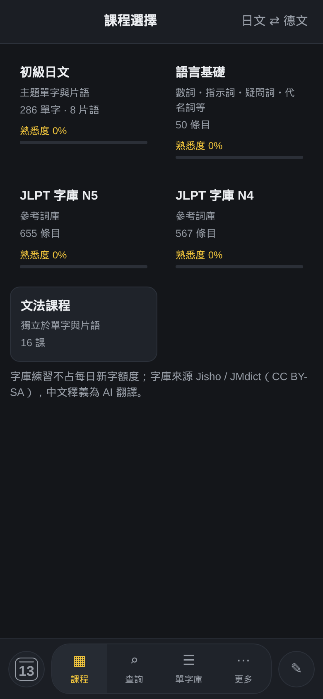
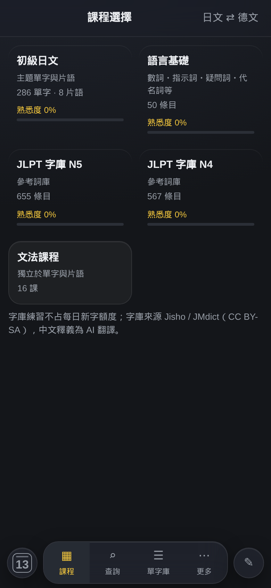
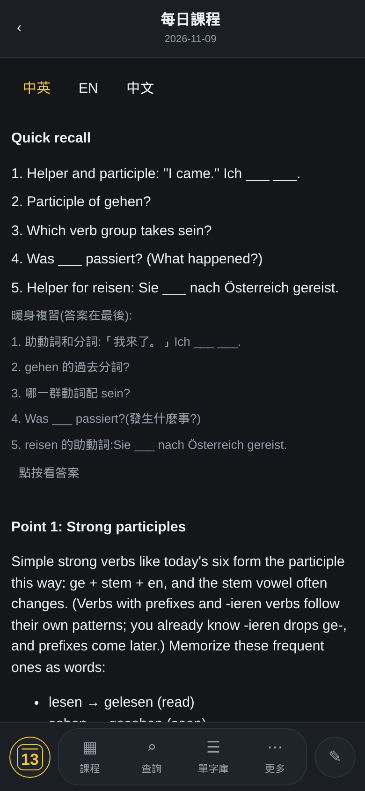
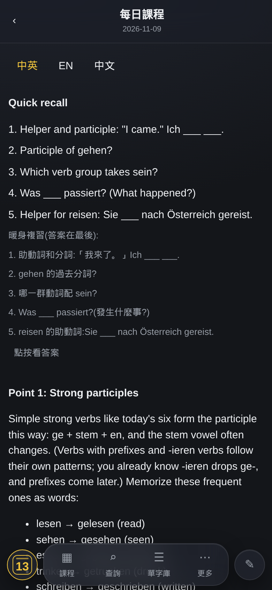
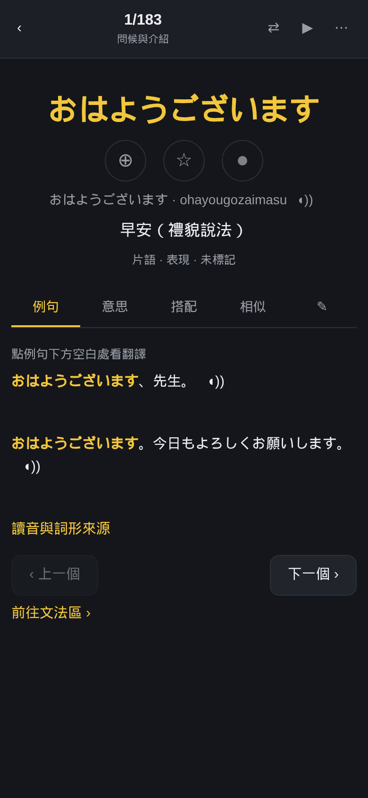
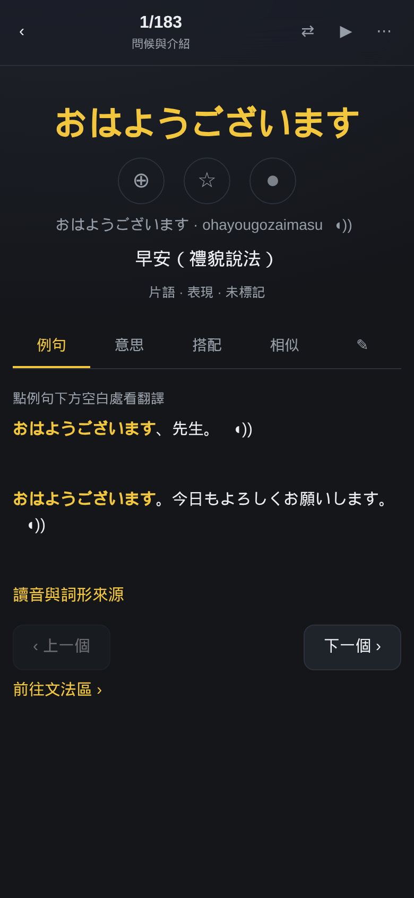

單字網站 UI 統一提案
依 2026-11-09 的方向指示整理：以參考圖二與 Apple 液態玻璃（Liquid Glass）為方向，統一全站視覺語言與互動原則。本頁只是提案；未經同意前，正式網站不會更動。
現行 vs 提案對照（手機 390px 實際畫面）
左為現行 v14.74，右為同一畫面套用提案樣式的模擬。






視覺原則
- 浮動磨砂層：底部操縱欄與頂部標題改為浮動半透明層，後方內容隱約透出；層次來自前後關係，不靠厚重陰影。
- 卡片玻璃化：圓角加大（18px）、1px 細邊框、頂緣一道細高光、底色微透。
- 深色基底保留，只加一層極淡的頂部漸層增加深度。
- 小按鍵統一為圓形／膠囊語彙，與操縱欄一致。
互動原則
- 動效節制：200–250ms 緩動；按壓回饋為 0.98 微縮；系統「減少動態效果」開啟時全部停用。
- 狀態改變一定有動畫以外的依據（顏色或圖示），不靠動畫傳達。
- 以點按為主，不新增滑動手勢；測驗作答流程不變。
色彩方案（請 MM 二選一）
- A（建議）：保留金黃 為唯一點綴色，只用於啟用態、熟悉度、主要操作。理由：學習場景需要一眼辨認「現在在哪、什麼可按」；參考圖的全灰階適合系統控制列，但全站單色在深色玻璃上對比偏弱。金色是既有識別，不是新增裝飾。
- B：全灰階＋白色強調，完全貼近參考圖；啟用態以白色與粗細區分。代價：熟悉度色階與啟用態的辨識較弱。
兩案都不新增色彩、不做裝飾性視覺，避免「AI 感」的花俏外觀。
守護與降級
- 磨砂效果只用於操縱欄、頂部標題、卡片三處，避免效能負擔；不支援 backdrop-filter 的瀏覽器自動降為實色。
- 文字一律在對比足夠的底上；模糊層上不放內文。
- 學習進度、本機資料、內容與導覽架構不變。
- 本提案為方向靠攏，不宣稱等同 Apple 原生效果；以網頁技術可達成者為準。
分階段進行
- 第一階段：操縱欄＋頂部標題＋卡片（即本頁模擬範圍）。
- 第二階段：彈窗、選單、對話框。
- 第三階段：動效細節。
每階段以手機尺寸截圖驗證後再進行下一步。
待 MM 決定：色彩方案 A 或 B；是否進入第一階段。